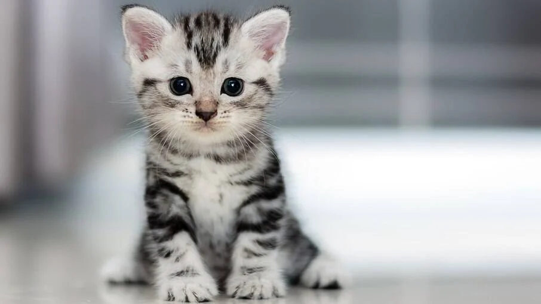

Fatos sobre gatos
Coisas que gatos amam:
- Catnip (erva para gatos)
- Amassar pãozinho
- Cheirar azeitonas

Top 3 coisas que gatos odeiam
- Ir ao veterinário
- Fogos de artifício
- Invasores
Clique aqui para ver mais fotos de gatos.

Responda esta pesquisa. Nos ajude a entender mais sobre esses bichinhos.
PS: Se você quiser, pode anexar uma foto do seu gato para fazer parte de nossa galeria.
Quero participar da pesquisa